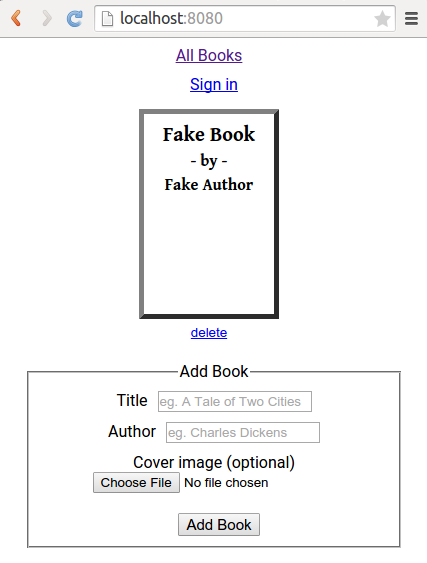
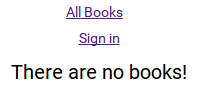
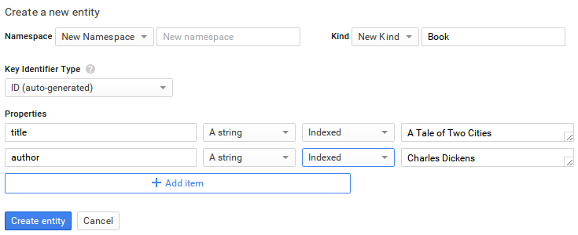
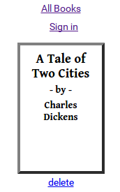
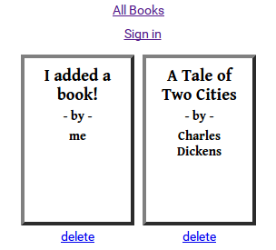
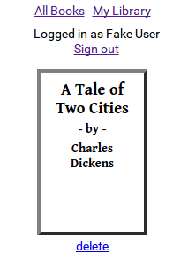
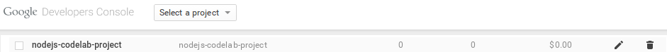
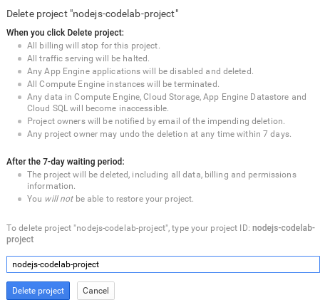

In this codelab, you’ll learn how to integrate Google Cloud Platform services into a Node.js web application to store data, upload images, and authenticate users.
You can either download all the sample code to your computer...
...or clone the GitHub repository from the command line:
git clone https://github.com/googlesamples/io2015-codelabs
The sample has the following layout:
To run the sample application on your local computer, let's perform the following steps in a terminal inside the cloud-nodejs/start folder.
1. Install dependencies. Enter the following command:
$ npm install
2. Run app.js to start the node.js server:
$ node app.js
3. In your web browser, enter the following address:
http://localhost:8080
You will see a page that looks like this:

The application currently displays a fake book.
Let’s fix that by querying for books from datastore!
In this step, you set up and ran the codelab sample application.
Next, you will setup Google Cloud Datastore and configure the application to begin querying it.
In this step, you will set up Google Cloud Datastore and configure the application to query from it.
Projects are used to manage all of the Google Cloud Platform resources for your application. Creating a new project gives you access to Datastore to store your project’s data. Later, you will use the same project to configure Cloud Storage for image uploading and OAuth for login.
For the node.js application to access this project’s services, eg. Datastore and Cloud Storage, it needs to be authenticated. Create a Service Account for this project which will be used to authenticate the application.
The credentials you created allow your application to communicate with Google APIs that you enable for this project. Enable the Datastore API so the application can access Datastore.
To configure the node.js sample application to authenticate with the project you created, edit the config.js file in the project directory and replace the placeholder value for projectId with the ID of the project that you created:
In this step, you created a Google Developer Console project and configured the node.js application with the credentials needed to query Datastore.
Next, you will update the application to query books from your project’s Datastore.
The sample application’s home page lists all books.
Books are retrieved by calling books.getAllBooks from the books module.
The current implementation of getAllBooks found in books.js simply returns a fake book.
In this step, you will write the code for getAllBooks to query for Book entities from Datastore.
To begin, install the gcloud npm package, which you will use to interact with Cloud Datastore.
> npm install gcloud --save
In the project directory, edit the books.js file and add the following code:
This requires the gcloud module and creates a Dataset object which provides the API you will use to interact with Datastore.
The projectId and keyFilename are read from the config.js file that you edited earlier.
Now replace the current getAllBooks function with the following:
Datastore queries are build with dataset#createQuery and run via dataset#runQuery.
createQuery accepts an array containing the kinds of entities to query and returns a Query object.
In our case, we want to query for all 'Book' entities.
runQuery returns a list of entities. Entities are returned in the following format:
To view your changes, stop your running node.js web server by pressing CTRL-C and run it again.
$ node app.js
Visit http://localhost:8080 in your browser.
Now, you should see no books because there are none in your Datastore!

To test the Datastore query and see data displayed, add a Book entity from the Google Developers Console.
Fill out the Create a new entity form with the following:
Book
title with the value A Tale of Two Cities
author with the value Charles Dickens

Now refresh your browser and you should see the book listed!

In this step, you queried for all Book entities from Google Cloud Datastore.
Next, you will write the code to create and delete books.
The sample application includes a form for adding books. When the form is submitted, the application creates the book by calling books.addBook.
The book title and author come from the 'title' and 'body' fields in the form.
You can ignore coverImageData and userId for now - we’ll come back to these later :)
Currently, if you try to add a book, you receive an error:
Let’s fix that!
In the project directory, edit the books.js file.
The current addBook function is a placeholder that simply returns an error.
To save a new Book entity in Datastore, replace the current addBook function with the following.
Dataset#save inserts or updates entity objects.
Entity objects are represented the following format:
If an entity ID is provided, calling #save will update the entity in Datastore. In our example, the book entity is being added to Datastore for the first time, so no ID is necessary (an ID will be auto-generated by Datastore).
Restart the node application and try submitting the form again to add a new book.
You should now see your added book!

Now try deleting a book by clicking the delete link below any of the listed books. You will receive an error:
The delete link in the sample application deletes books by calling books.deleteBook with the ID of the book to delete.
The sample implementation of books.deleteBook is also a placeholder which simply returns an error:
To delete the book with the provided ID, replace the current deleteBook function with the following.
Restart the node application and try deleting book again.
It should work!
In this step, you wrote the code to create and delete entities in Datastore.
Next, you will use Google Cloud Storage to upload book cover images.
The form for adding books also allows you to attach a cover image for a book.
If you try to create a new book with an attached image, you receive an error:
In this step, you will write the code to save book cover images in Google Cloud Storage.
First, create a Cloud Storage bucket to store book cover images:
In the project directory, edit the config.js file and replace the placeholder value for bucketName with the name of the bucket you created:
When the form is submitted with an image attached, the image data from the ‘cover’ form field is passed to the books.addBook function:
Currently, addBook returns an error when image data is provided:
Let’s fix this!
When coverImageData is passed in, we will save the book in Datastore with an imageUrl property specifying the URL to the uploaded book cover image.
To handle this scenario, replace the current addBook function in books.js with the following.
We have not yet implemented uploadCoverImage so trying to add a book with an image still results in an error:
Let’s fix this now!
Edit the books.js file and add a new storage and bucket variables:
bucketName is read from the config.js file that you edited earlier.
The bucket object provides the API you will use to interact with your Google Cloud Storage bucket.
To upload the image to Cloud Storage and return a publicly accessible URL for displaying the image, add the following uploadCoverImage function to books.js:
storage#file returns a File object providing the API for a file in Cloud Storage.
The publicly accessible URL for the image file will be https://<bucket name>.storage.googleapis.com/<filename>
Restart the node application and try adding a book with an image again.
It should work!
Right now, if you delete a book that has a cover image, the image will remain in your Cloud Storage bucket.
Let’s fix this now by updating deleteBook to also delete saved cover images.
Replace the current deleteBook function with the following.
Before deleting a book, the book is retrieved from Datastore by ID via dataset#get to determine whether or not it has a cover image.
If the book has a cover image, the file is deleted from Cloud Storage via File#delete before deleting the entity from Datastore.
Now deleting books with cover images will also delete the images from your bucket!
In this step, you created a Google Cloud Storage bucket, uploaded images into it, and deleted images from it.
Next, you will use OAuth 2.0 to add user login to the application.
The sample application includes a ‘Sign in’ link so that users can login and see a list of only the books they have added.
Currently, clicking ‘Sign in’ logs you in as “Fake User.”

Let’s fix this!
When a user logs in, the sample application redirects the user to an authentication URL, eg. the Google login screen.
Once the user is authenticated, they will be redirected back to your application with an authorization code you can use to get their profile information.
The application gets the authentication URL to redirect to by calling auth.getAuthenticationUrl from auth.js.
Right now, getAuthenticationUrl is a placeholder that simply redirects to the callback URL.
Let’s fix this by setting up Google OAuth 2.0 authentication and redirecting the user to the real Google sign in screen.
First, you need to create a web application client for authentication.
http://localhost:8080 and https://<your-project-id>.appspot.com to Authorized JavaScript origins
http://localhost:8080/oauth2callback and https://<your-project-id>.appspot.com/oauth2callback to Authorized redirect URIs
The node.js application needs to be configured to use the Client ID you created.
In the project directory, edit the config.js file and replace the placeholder values for clientId and clientSecret:
To begin, install the googleapis npm package, which you will use to generate the authentication URL and fetch profile information for the logged in user.
> npm install googleapis --save
In the project directory, edit the auth.js file and add the following code to require the googleapis package:
Now, replace the current getAuthenticationUrl function with the following:
The clientId and clientSecret are read from the config.js file that you edited earlier.
Restart the node application and click ‘Sign in’. You should be redirected to the Google sign in page.
If you login, you will be redirected back to the sample application, but you will still appear to be signed in as “Fake User” because the callback is not implemented to fetch the user profile.
Let’s fix that!
Enable the Google+ API so the application can all the API to fetch user profiles.
To fetch the profile of the authenticated user, the /oauth2callback route that Google OAuth 2.0 redirects to calls auth.getUser from auth.js, passing it the provided ?code query string that can be used to fetch the user’s profile.
The returned user profile is stored in the application session (via cookies).
Currently, auth.getUser always returns “Fake User.”
Let’s fix this!
Replace the current getUser function with the following:
This code gets an access token for the user who authenticated and then calls the the People.get method of the Google+ API using the user’s access token.
The sample application expects a user object in the following format:
Restart the node application the try and Sign in again (you may need to Sign out first).
You should see your name and profile image displayed!
In this step, you implemented an OAuth 2.0 web authentication flow and fetched the authenticated user’s profile information.
Next, you will associated users with the books they add and query Datastore for only that user’s books.
When a user is signed in, the sample application passes the ID of the signed in user to books.addBook when new books are created.
Currently, we’re not tracking this userId when saving book entities.
To fix this, update the entity object in the books.addBook function books.js to include the userId when provided:
Now, books created by authenticated users will be associated with the books they add. This means we can query Datastore to list only the books added by that user.
The sample application displays a ‘My Library’ link when a user is signed in. When clicked, only books owned by the user are displayed.
A user’s books are fetched by calling books.getUserBooks in books.js.
Sign into the application and click on the ‘My Library’ link. You will receive an error:
Let’s fix that!
Currently, the getUserBooks function in books.js is a placeholder that simply returns an error:
In the project directory, edit the books.js file and replace the getUserBooks function with the following:
Restart the node application, sign in, and click on the ‘My Library’ link. This should now list your books!
If you haven’t added any books, you will see “There are no books!.” In this case, add a book as a signed in user and then click the ‘My Library’ link again to view the list of only books you have added.
In this step, you associated books with the user who created them and queried books from Datastore, filtering them by the userId property.
You learned how to integrate Datastore and Cloud Storage into a node.js application and use OAuth 2.0 to authenticate users!
gcloud library to access Google Cloud Datastoregcloud library to access Google Cloud Storagegoogleapis library to authenticate users via OAuth 2.0googleapis library to fetch user profiles from the Google+ APIdataset#runQuery
Watch these videos:
To delete the project that you created for this codelab:

Then follow the steps to confirm project deletion:
